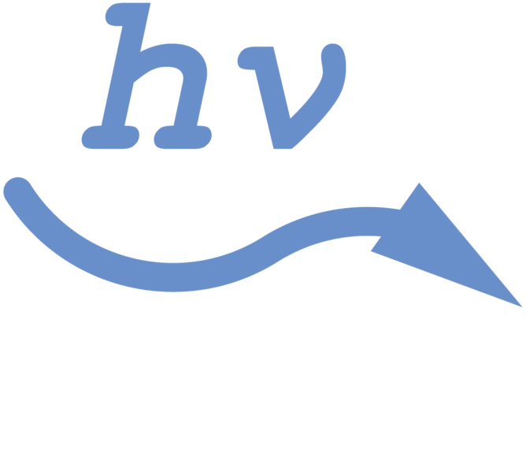

When light  hits an iron ion Fe³+  from ammonium iron(III) citrate, it initiates a reaction in which Fe³+
gains an electron
from ammonium iron(III) citrate, it initiates a reaction in which Fe³+
gains an electron  , turning
(or, as chemists say, reducing) into Fe²+
, turning
(or, as chemists say, reducing) into Fe²+  .
But the product of this reaction is not yet visible, and that’s where
potassium hexacyanoferrate(III)
comes into play. It does not stick to Fe³+ , but
once it meets Fe²+ , it forms an insoluble
intensely-colored compound
.
But the product of this reaction is not yet visible, and that’s where
potassium hexacyanoferrate(III)
comes into play. It does not stick to Fe³+ , but
once it meets Fe²+ , it forms an insoluble
intensely-colored compound  called Prussian blue.
This is what we see when we look at a cyanotype image.
called Prussian blue.
This is what we see when we look at a cyanotype image.